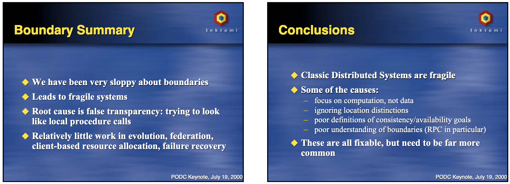

### Flow Code "It is not the beauty of a building you should look at; its the construction of the foundation that will stand the test of time." ― David Allan Coe // Name: Jukka Nikki, Identity: Programmer, Since: 6502 // TODO: Codeneering - reaching higher level of abstraction
# 1st Definition of program
#### Program = Computation + Coordination "We can build a complete programming model out of two separate pieces - the computation model and the coordination model The computation model allows programmers to build a single computational activity: a single-threaded, step-at-a-time computation. The coordination model is the glue that binds separate activities into an ensemble." - David Gelernter, Nicholas Carriero
### Ensembles "We will define an asynchronous ensemble (ensemble, for short) as a collection of asynchronous activities that communicate. An activity is a program, process, thread or any agent capable in principle of simulating a Turing Machine. It could be a person; it could be (recursively) another whole ensemble." - David Gelernter, Nicholas Carriero
### Computations "a computation language by itself is useless. A computation must communicate with its environment or it serves no purpose. And the environment, insofar as it must ultimately be a person or people, can only be an active agent. A computation must perform operations whose purpose is to get information from or convey it to the environment, and these operations are a coordination language" - David Gelernter, Nicholas Carriero
# Distributed computation
##### [Microservices principles](https://priyalwalpita.medium.com/coupling-and-cohesion-in-microservices-235ed9203843) All you need is: Single purpose, high cohesion, loose coupling?
##### [Microservices tradeoffs](https://martinfowler.com/articles/microservice-trade-offs.html) "Soft factors such as the quality of people on the team, how well they collaborate with each other, and the degree of communication with domain experts, will have a bigger impact than whether to use microservices or not." - Martin Fowler
##### [Microservices premium](https://martinfowler.com/bliki/MicroservicePremium.html) <img alt="microservices premium" src="images/microservices_premium_productivity.png" width="40%"> "don't even consider microservices unless you have a system that's too complex to manage as a monolith. The majority of software systems should be built as a single monolithic application." - Martin Fowler
# distributed coordination
#### workflows "Use process choreography and orchestration, where fitting, to manage long-running system-wide workflows. For simpler long-running business software processes that require limited individual steps, choreography is suitable. For more complex processes with a fair number of processing steps, orchestration works best." - Vaughn Vernon, Tomasz Jaskula
#### Choreography "Choreography is a process in which the decision to fulfill a given workflow step is left up to the individual subsystems. Each contextual subsystem must understand the stimulus, such as an event notification, that signals that a given step must happen next. Choreography is best reserved for simpler process workflows with few required steps." - Vaughn Vernon, Tomasz Jaskula
#### Choreography, example
#### Choreography, cons "when the process stalls somewhere, it can be difficult to determine where it went wrong and why. event dependencies become coupled to subsystems that don’t own the events, and must be subjectively interpreted and applied to their own purpose. dependencies on events can become quite tangled as system and process complexities increase." - Vernon & Jaskula
#### Orchestration "Orchestration is a process in which a central control mechanism guides the workflows steps by commanding each one to take place when and as directed. Orchestration is most useful when a process includes several or many complex steps, such as the policy underwriting workflow." - Vaughn Vernon, Tomasz Jaskula
#### Orchestration, example
#### Orchestration, cons "is designed and implemented by the team most interested in its ultimate outcome. They might become a blocker when changes are made across subsystems involved in the process that must be applied inside the orchestrator. might be too complex for controlling processes with less complexity. must not become a dungeon for business logic; it must be used only to drive steps of the process." - Vernon & Jaskula
# 2nd Definition of program
<img alt="algoriths and data structures" src="images/algorithms_cover.png" width="50%">
# Distributed data
<img alt="eventual consistency" src="images/eventual_consistency_comic.png" width="70%">
#### Developer: keep data Consistent! "Microservices require multiple resources to update, and distributed transactions are frowned on (for good reason). So now, developers need to be aware of consistency issues, and figure out how to detect when things are out of sync before doing anything the code will regret." - Martin Fowler
# Challenges
#### Fallacies - The network is reliable. - Latency is zero. - Bandwidth is infinite. - The network is secure. - Topology doesn't change. - There is one administrator. - Transport cost is zero. - The network is homogeneous.
#### Oh my 400! What happened? <img alt="call failure" src="images/distributed_communication_failures.png" width="70%"> - Provider didn't get request - Provider failed processing - Request processed, response was lost
#### Without distribution (ACID, single db) - strong consistency - isolation of operations - atomic commits & rollbacks - changes are durable - referential integrity - joins between entities - where clauses & subqueries - single source of truth - locking, backups, ...
#### With distribution (n services & data sources) - consistent at the end of "distributed transaction" - changes visible when "local transaction" commits - need to use compensation instead of rollback - errors might prevent part of state changes and result inconsistent state - integrity checks need to be programmed - no joins, wheres & subqueries without copies of data or queries to other services - copies of data synced programmatically - no locks, set of backups, ...
BASE = Basically available + Soft-state + Eventually consistent
#### consistency, snapshots and availability - backups and restorations are always point in time - distributed systems push "time of consistency" until the "last" transaction gets completed - "eventually consistent backups" are permanently inconsistent, obsolete or have risk of data loss Failure of one database would need to push other databases back in time in order to recover to a consistent state. Or we just need to deal with inconsistency - orphaned data, broken links, ...
##### reasons of coupling
##### types of coupling
#### [distributed monolith - symptoms](https://www.simplethread.com/youre-not-actually-building-microservices/) - A change to one microservice often requires changes to other microservices - Deploying one microservice requires other microservices to be deployed at the same time - Your microservices are overly chatty - The same developers work across a large number of microservices - Many of your microservices share a datastore - Your microservices share a lot of the same code or models
“worst of all worlds. You’ve taken the relative simplicity of a single monolithic codebase, and you’ve traded it in for a deeply intertwined distributed system." - Justin Etheredge
#### fragile => resilient  In level of systems: computation is simple, coordination and state complex.
# Technology
### Camunda: company - Initially Berlin based consulting company - First workflow engine "Camunda" based on Activity fork with DB for coordination - Second workflow engine "Zeebe" with Kafka / Streams for coordination - Developer friendly approach to workflows
### Zeebe <img alt="zeebe" src="images/zeebe_architecture.png" width="100%"> This stuff scales - 1.0.0 - 11 May 2021
### Camunda <img alt="camunda" src="images/camunda_architecture.png" width="50%"> This stuff works - since 2010
<img alt="wf engine role" src="images/workflow_engine_usecases.jpg" width="75%"> 1. Asynchronous communication by commands and events — normally using a message or event bus 2. Point-to-point communication by request/response 3. Work distribution by workflow engine
## Embedded microservices workflow engine
#### Embedded Process Engine (Microservice) "The process engine is added as an application library to a custom application. This way, the process engine can easily be turned on or off with the application lifecycle. It is possible to run multiple embedded process engines on top of the same shared database." Same jvm with app instance, shared database
#### java delegate import org.camunda.bpm.engine.delegate.DelegateExecution; import org.camunda.bpm.engine.delegate.JavaDelegate; public class ProcessRequestDelegate implements JavaDelegate { public void execute(DelegateExecution execution) throws Exception { var customerId = execution.getVariable("customerId") .. } } Command Pattern, original GoF goodies
#### BPMN / Camunda simplified start process, wait process to orchestrate calls
### Camunda toolset <img alt="camunda ecosystem" src="images/camunda_ecosystem.png" width="80%"> model -> execute -> observe -> optimize
## Business agility
#### Is it enabler for evolutionary architecture? “For most things we create, we have to accept that once the software gets into the hands of our customers we will have to react and adapt, rather than it being a never-changing artifact. Thus, our architects need to shift their thinking away from creating the perfect end product, and instead focus on helping create a framework in which the right systems can emerge, and continue to grow as we learn more.” ― Sam Newman
Hype cycle, getting to top: Digital Ops .. ".. enables rapid transformation by integrating humans and systems through the direct execution of process, decision and event models to automate business operations. It focuses on the dynamic combination and extension of component models, exploiting both choreography and orchestration aspects of process automation" - Gartner Hype Cycle for EA, 2021
#### Pitfalls, Solutions & TCO [The Role of the Workflow Engine](https://camunda.com/blog/2020/02/the-microservices-workflow-automation-cheat-sheet-the-role-of-the-workflow-engine/) [3 Common Pitfalls in Microservice Integration & How to Avoid Them](https://berndruecker.io/3-pitfalls-in-microservice-integration/) [DigitalOps - agile & continous process improvement](https://camunda.com/blog/2021/09/gartner-reports-the-rise-of-digitalops/) [Forrester Camunda TCO report](https://camunda.com/press_release/study-camunda-can-deliver-389-roi-with-end-to-end-process-automation/)
# Fairytale
Once upon a time King of Monolithian ruled his land with good system. Kings orders were consistent, system checked that their integrity was fine, they were made in isolation and committed to everyone simultaneously. If execution of orders was not possible they were rolled before harm was done. Everyone knew orders of King, and there always only one copy of them. This went well for a long time.
It happened one day that Princess of Monolithian integrated with Prince of Distributian. Integration was done using pigeons, riding messengers and smoke signals. Pigeons were hunted, messengers drink too much and were late, smoke signals didn't work on rainy days. Laws were no more consistent, it was hard to know which messages were valid, if messages were complete and came to right order. Correcting falsely interpreted laws was hard, and often done only in one Kingdom. King didn't anymore know which laws were followed in Monolithian and Distributian...
King understood that Monolithian and Distributian were autonomous Kingdoms and needed to work closely together. Keeping laws consistent was effortful but mandatory, since both kingdoms could change them. Often when problem occured in one kingdom, fixes and compensative actions were executed in both. King remembered how easy everything was before, but when younger rebellious Princess of Monolithian started on-off relatioship with Prince of Microservian King was happy that he already knew what to expect ...
##### tighter coupling - avoid
##### looser coupling - prefer
##### reasons for modularity In tightly coupled system change in one module usually forces a ripple effect of changes in other modules.
#### failures & retries & idempotency & compensation - any operation can fail or timeout - operations should be idempotent to support retry - if retry is not possible compensation might be needed to minimize harm - compensation might not return data to original state
#### Does it solve important problem? “You won’t appreciate the true horror, pain and suffering of microservices until you’re running them in production" ― Sam Newman
### Does it add accidental complexity? "although this isolation can add some overhead, the resulting simplicity makes our distributed system much easier to reason about." ― Sam Newman
Total cost of ownership: Before Camunda .. ".. business processes of several organizations were manual or only partially automated using legacy digital process automation (DPA) suites, making them slow, inefficient, inconsistent, and disorganized. As a result, the enterprises found they were burdened with subpar customer service, and their employees were left frustrated by the time it took to accomplish common tasks." - Forrester, 2021
Knowledge work is demanding .. And will thus be optimized, automated, and ..
"It is still important to realize that microservices represent a trade-off. Microservices should only be used if the benefits outweigh the problems in the concrete scenario." - Eberhard Wolff